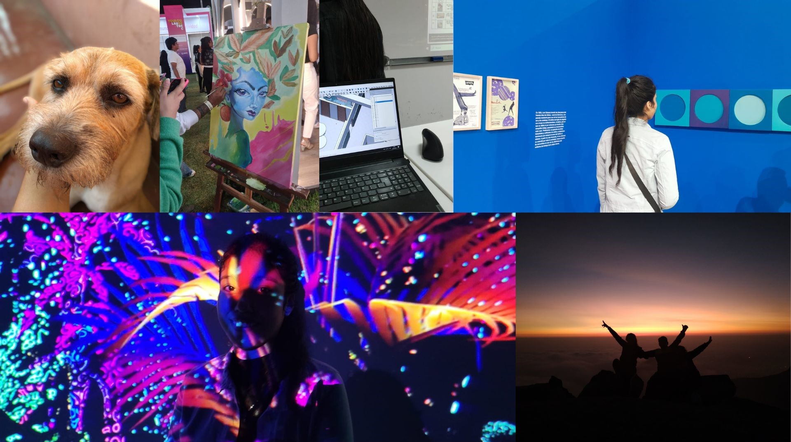

¿Quién soy?
Hola soy Mirella, les cuento un poquito sobre mí, tengo 22 años, actualmente me encuentro en el 7to ciclo de la carrera, Arquitectura de Interiores, manejo programas como Sketchup, AutoCad, Photoshop, V-Ray, entre otros, tengo a mi perrito llamado Chester que siempre me acompaña en mis amanecidas, aparte de ello me encanta escuchar música,no inicio mi día sin música y un buen café, también me gusta visitar talleres creativos como ya lo habran visto en las imágenes y tambien me gusta hacer planes al aire libre con mi familia, dibujo en mis tiempos libres, y me encanta tomar fotos a todo.
Actualmente no tengo un emprendimiento, pero contando un poco más sobre mi carrera. Recientemente, tuve la oportunidad de realizar un proyecto sobre la remodelación de un segundo piso a un cliente y salio todo bien en el proyecto y estoy contenta con los resultados obtenidos. Esta experiencia me permite crecer profesionalmente y espero que con el tiempo surjan más oportunidades para aplicar mis habilidades y conocimientos, y así continuar desarrollándome en mi carrera.